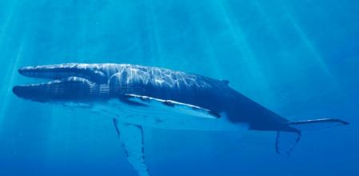

(Balaenoptera Musculus)
La Ballena Azul son es una especie de cetáceo misticeto de la familia Balaenopteridae. Son los animales más grandes en la tierra, su tamaño medio es de entre 24 y 27 metros de longitud y pesan entre 100 y 120 toneladas, aunque hay registros de ejemplares de más de 30 m de longitud y 170 t de peso, que lo convierten en el mayor animal del planeta Tierra, no solo en la actualidad sino también el mayor del que se tenga registro en la historia de la vida en la Tierra. Las ballenas azules, presentes en todos los océanos del mundo, suelen vivir en solitario o en parejas, aunque ocasionalmente se las puede ver en pequeños grupos. Suelen pasar el verano alimentándose en aguas polares, para llevar a cabo prolongadas migraciones hacia el ecuador conforme llega el invierno.
1.El tamaño medio de un ejemplar adulto de rorcual o ballena azul es de aproximadamente 24 a 27 metros, sin embargo, en algunos casos se han registrado ejemplares con una longitud de más de 30 metros. En concreto, se trataba de una ballena que medía 33,63 metros en total. 2.Las ballenas azules adultas tienen una masa corporal comprendida entre las 100 y las 120 toneladas. El récord de peso lo tiene una ballena del océano Pacífico, cuyo peso registrado fue de 173 toneladas. 3.Las ballenas azules se encuentran dispersas por todos los océanos del planeta. Existen diferentes poblaciones, habitualmente diferenciadas en su localización según su subespecie. Sin embargo, con la llegada del frío, la ballena azul migra a lugares más cálidos, como el Golfo de México. 4.En general, las ballenas barbadas son más solitarias que los delfines. Se ha podido ver ballenas azules solas, en pareja o en grupos pequeños conformados por 7 individuos. Solo en algunas ocasiones pueden juntarse en una misma zona hasta 60 de ellas, sobre todo cuando hay gran cantidad de alimento. 5.Su dieta se basa principalmente en krill, y puede consumir hasta 40 millones de estos crustáceos al día. Una vez que cierra su mandíbula, saca el excedente de agua mientras retiene su comida con las barbas. Otras especies son incidentalmente devoradas por este mamífero, como pequeños peces, calamares y otros crustéceos.